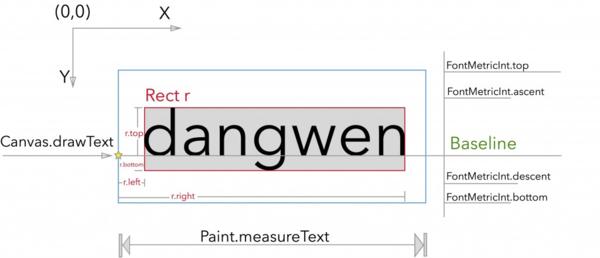

制定出View
自定义View的分类
自定义View分为两类：继承自View（包括继承自View的子类），以及继承自ViewGroup（包括继承自ViewGroup的子类）。
View的构造函数
一般情况下，覆写这三个构造方法就可以了，通常会让构造函数相互调用，最终只调用一个构造函数。
//在Java代码中创建View的时候调用
public MyTextView(Context context) {
this(context,null);
}
//在XML中使用的时候调用
public MyTextView(Context context, @Nullable AttributeSet attrs) {
this(context, attrs,0);
}
//在XML使用并且使用了style属性的时候调用
public MyTextView(Context context, @Nullable AttributeSet attrs, int defStyleAttr) {
super(context, attrs, defStyleAttr);
}
View的工作流程
View的工作流程主要是指measure、layout、draw这三个流程，即测量、布局和绘制，其中measure确定View的测量宽/高，layout确定View的最终宽/高和四个顶点的位置，而draw则将View绘制到屏幕上。
自定义属性
注意，自己定义的属性不能和系统的属性重复，不然会报错。自定义属性的步骤为：1、在res->values文件夹下新建一个xml文件，名称可以顺便取。写法参照下面的例子.
<?xml version="1.0" encoding="utf-8"?>
<resources>
<!--定义自定义属性指定的View-->
<declare-styleable name="MyTextView">
<!--定义属性名称和属性的参数类型-->
<attr name="myText" format="string"/>
<!--可以接受多个参数类型-->
<attr name="myBackground" format="reference|color"/>
<attr name="myType">
<!--枚举类型的写法-->
<enum name="number" value="1"/>
<enum name="word" value="2"/>
</attr>
</declare-styleable>
</resources>
2、在XML布局文件中，声明命名空间和使用自定义属性.
<com.example.fxrc.mytextview.MyTextView
xmlns:app="http://schemas.android.com/apk/res-auto"
android:layout_width="wrap_content"
android:layout_height="wrap_content"
app:myText="Hello World"
app:textColor="#ff0000"/>
3、在构造函数中得到自定义属性
TypedArray typedArray = context.obtainStyledAttributes(attrs,R.styleable.MyTextView);
mText = typedArray.getString(R.styleable.MyTextView_myText);
typedArray.recycle();//释放
之后，就可以使用XML的属性值了。
测量
为了对View进行统一的建模，每一个View都是一个矩形。只有长宽两个属性。一般情况下，覆写这个函数的模板如下。
@Override
protected void onMeasure(int widthMeasureSpec, int heightMeasureSpec) {
// 获取宽高的模式，widthMeasureSpec的前两位代表模式，后30位代表值
int widthMode = MeasureSpec.getMode(widthMeasureSpec);
int heightMode = MeasureSpec.getMode(heightMeasureSpec);
// 获取宽高的值
int widthSize = MeasureSpec.getSize(widthMeasureSpec);
int heightSize = MeasureSpec.getSize(heightMeasureSpec);
// 如果是match_parent或给dp值得，是原来的值就行
//如果是wrap_content需要自己测量宽高
if(widthMode == MeasureSpec.AT_MOST){
}
if(heightMode == MeasureSpec.AT_MOST){
}
// 设置控件的宽高
setMeasuredDimension(widthSize,heightSize);
}
值得说明的是，MeasureSpec.AT_MOST -> wrap_content; MeasureSpec.EXACTLY -> 具体数值和match_parent; MeasureSpec.UNSPECIFIED -> 父容器不对View做限制，要多大给多大，一般用于系统内部，表示一种测量状态。 对于普通View（非顶层View DecorView），其MeasureSpec由父容器的MeasureSpec和自身的LayoutParams来共同决定。
理解这个函数，相当重要，如，它可以解决Scro-llView嵌套ListView无法完全显示的问题。当ListView被ScrollView嵌套时，ListView使用的测量模式是ScrollView传入的MeasureSp-ec.UNSPECIFIED，在ListView中，当模式为MeasureSpec.UNSPECIFIED，它的测量函数方法为：
if (heightMode == MeasureSpec.UNSPECIFIED) {
heightSize = mListPadding.top + mListPadding.bottom + childHeight +
getVerticalFadingEdgeLength() * 2;
}
可以看出，对这个函数的调用，ListView肯定是无法完全显示出来的。要解决这个，方法还是比较简单的，覆写ListView的onMeasure方法：
@Override
protected void onMeasure(int widthMeasureSpec, int heightMeasureSpec) {
// 设计一个较大的值和AT_MOST模式
int newHeightMeasureSpec = MeasureSpec.makeMeasureSpec(Integer.MAX_VALUE>>2,
MeasureSpec.AT_MOST);
//再调用原方法测量
super.onMeasure(widthMeasureSpec, newHeightMeasureSpec);
}
布局
布局就是把子View按照一定的规则进行摆放，View相当于一个矩形，布局需要确定它的上下左右是个属性，其难易程度取决于布局是否复杂。下面以一个流式布局的关键代码来说明布局的一些基本方法。
@Override
protected void onMeasure(int widthMeasureSpec, int heightMeasureSpec) {
super.onMeasure(widthMeasureSpec,heightMeasureSpec);
int width = MeasureSpec.getSize(widthMeasureSpec);
int height = 0;
int totalWidth = 0;
for (int i = 0; i < getChildCount(); i++) {
final View child = getChildAt(i);
measureChild(child, widthMeasureSpec, heightMeasureSpec);
int childWidth = child.getMeasuredWidth();
int childHeight = child.getMeasuredHeight;
totalWidth += childWidth;
if (totalWidth > width) {
totalWidth = childWidth;
}
if (totalWidth == childWidth) {
height += childHeight;
}
}
setMeasuredDimension(width, height);
}
@Override
protected void onLayout(boolean changed, int l, int t, int r, int b) {
int left = 0,top = 0;
for (int i = 0,j = 0; i < getChildCount(); i++) {
final View child = getChildAt(i);
int childWidth = child.getMeasuredWidth();
int childHeight = child.getMeasuredHeight;
int addRight = left + childWidth;
if(addRight < getWidth()){
child.layout(left,top,left+childWidth,top+childHeight);
left += childWidth;
}else{
left = 0;
top += childHeight;
child.layout(left,top,left+childWidth,top+childHeight);
}
}
}
这里基本的逻辑是，把View按照从左到右排列，如果排不下了，就换行。这里没有考虑到margin之类的属性，但是布局的基本流程大致就是这样。
为了统一，每一个View的坐标都从0开始，长宽为自身的长宽。这样，为每一个View建立了一个独立的区域，我们只需要在这个View的区域考虑，而不用计算View之间的相对关系。
绘制
画笔的常用属性
1、绘制文字
绘制文字的一部分难度可能在于参数的理解，在网上找了一张图。

绘制文字的常用代码如下。
//测量文字的宽高
String text = getText().toString();
Rect bounds = new Rect();
mPaint.getTextBounds(text,0,text.length(),bounds);
//计算x的位置,这里是在中间
int x = getWidth()/2 - bounds.width()/2;
//计算基线位置，这里是中间的位置
Paint.FontMetricsInt fontMetrics = mPaint.getFontMetricsInt();
//计算文字的中心位置和基线的偏移量
int dy = (fontMetrics.bottom - fontMetrics.top) / 2 - fontMetrics.bottom;
int baseLine = getHeight() / 2 + dy;
canvas.drawText(text,x,baseLine,mPaint);
值得说明的是，FontMetricsInt 类 有 top 、bottom 两个成员，top表示基线到文字最上面的位置的距离，是个负值；bottom为基线到最下面的距离，是个正值。这里要注意坐标系的问题，不然可能会弄糊涂，分不清该加还是该减dy。
2、绘制规则图形
3、绘制不规则图形
3、多种颜色——割裂画布